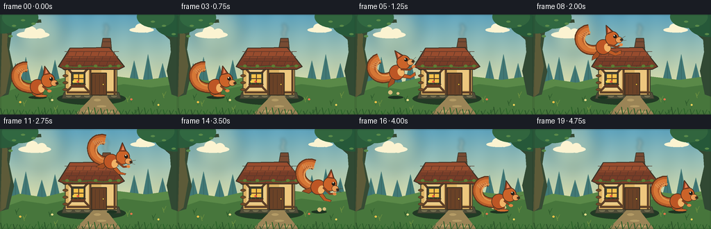
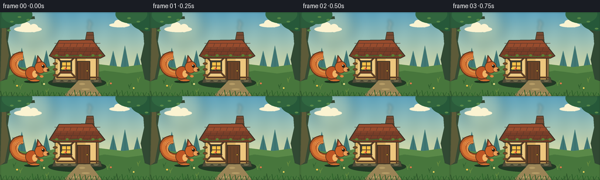

CODING AGENTS AS PIXEL WORLD MODELS
traex/GPT-5.6-Sol · dynamic_spatial_relationship_0024
点击播放 · 原生 RGB 像素
逐轮保存的候选
回放视频、检查图与代码变化。
每份候选均可单独播放。实际图片检查记录在下方工具轨迹中。
候选 01播放与检查图
点击播放 · 原生 RGB 像素


展开代码变化
--- 上一保存版本
+++ 本次保存版本
@@ -0,0 +1,308 @@
+from pathlib import Path
+import math
+import numpy as np
+from PIL import Image, ImageDraw, ImageFilter
+import artifact_io
+
+# Deterministic, hand-drawn procedural animation.
+W, H, N = 256, 144, 20
+SS = 3
+rng = np.random.default_rng(2402)
+
+
+def sc(v):
+ if isinstance(v, (tuple, list)):
+ return tuple(int(round(x * SS)) for x in v)
+ return int(round(v * SS))
+
+
+def poly(draw, pts, fill, outline=None, width=1):
+ p = [(sc(x), sc(y)) for x, y in pts]
+ draw.polygon(p, fill=fill)
+ if outline:
+ draw.line(p + [p[0]], fill=outline, width=sc(width), joint="curve")
+
+
+def ellipse(draw, box, fill, outline=None, width=1):
+ draw.ellipse(sc(box), fill=fill, outline=outline, width=sc(width) if outline else 1)
+
+
+def line(draw, pts, fill, width=1, joint="curve"):
+ draw.line([(sc(x), sc(y)) for x, y in pts], fill=fill, width=sc(width), joint=joint)
+
+
+def base_scene(frame):
+ h, w = H * SS, W * SS
+ y = np.arange(h)[:, None]
+ # Warm storybook morning sky.
+ top = np.array([92, 163, 194.], dtype=float)
+ bot = np.array([226, 226, 172.], dtype=float)
+ t = np.clip(y / (112 * SS), 0, 1)[:, :, None]
+ rgb = top[None, None, :] * (1-t) + bot[None, None, :] * t
+ rgb = np.repeat(rgb, w, axis=1)
+ # Gentle paper grain, stable across animation.
+ yy, xx = np.mgrid[0:h, 0:w]
+ grain = 1.8*np.sin(xx/16.1) + 1.2*np.sin((xx+yy)/31.7)
+ rgb += grain[:, :, None]
+ im = Image.fromarray(np.uint8(np.clip(rgb, 0, 255)), 'RGB')
+ d = ImageDraw.Draw(im)
+
+ # Sun glow made from translucent, blurred circles.
+ glow = Image.new('RGBA', im.size, (0,0,0,0))
+ gd = ImageDraw.Draw(glow)
+ gd.ellipse(sc((20, -16, 93, 57)), fill=(255,227,137,35))
+ gd.ellipse(sc((33, -3, 72, 36)), fill=(255,242,183,75))
+ glow = glow.filter(ImageFilter.GaussianBlur(sc(9)))
+ im = Image.alpha_composite(im.convert('RGBA'), glow)
+ d = ImageDraw.Draw(im)
+
+ # Slowly drifting soft clouds provide subtle life without moving the camera.
+ drift = frame * 0.22
+ for cx, cy, sx in [(49+drift, 29, 1.0), (205+drift*.6, 22, .75)]:
+ col = (245,243,215,105)
+ ellipse(d, (cx-25*sx,cy-5*sx,cx+22*sx,cy+5*sx), col)
+ ellipse(d, (cx-14*sx,cy-12*sx,cx+4*sx,cy+5*sx), col)
+ ellipse(d, (cx+1*sx,cy-9*sx,cx+16*sx,cy+5*sx), col)
+
+ # Distant blue woods.
+ for x, ht in [(-5,45),(13,34),(28,43),(51,31),(70,39),(184,38),(204,47),(225,34),(243,48),(261,40)]:
+ base = 104
+ col = (64,120,121,150)
+ poly(d, [(x,base),(x+9,base-ht),(x+18,base)], col)
+ line(d, [(x+9,base-ht+7),(x+9,base+2)], (54,100,98,120), .8)
+
+ # Far rolling ground.
+ poly(d, [(-5,103),(28,93),(62,98),(96,90),(132,97),(168,89),(210,94),(261,87),(261,145),(-5,145)], (88,137,74,255))
+ poly(d, [(-5,116),(32,103),(67,108),(101,101),(140,108),(178,100),(217,105),(261,99),(261,145),(-5,145)], (70,118,62,255))
+
+ # Large framing trees at edges.
+ poly(d, [(-4,0),(14,0),(17,23),(13,50),(20,82),(12,115),(-5,120)], (54,75,54,255))
+ poly(d, [(4,0),(12,0),(10,45),(15,74),(8,113),(0,119)], (91,91,59,255))
+ poly(d, [(242,0),(261,0),(261,120),(247,115),(240,81),(246,54)], (48,73,53,255))
+ # Branch silhouettes and foliage crowns.
+ line(d, [(9,26),(35,11),(59,9)], (53,73,52,255), 5)
+ line(d, [(248,36),(226,17),(206,10)], (49,71,51,255), 5)
+ for cx,cy,rx,ry,col in [
+ (4,10,28,17,(42,91,61,255)),(29,4,26,16,(48,104,67,255)),
+ (252,12,30,20,(38,88,59,255)),(224,3,27,16,(48,101,64,255))]:
+ ellipse(d,(cx-rx,cy-ry,cx+rx,cy+ry),col)
+ # small leaf highlights
+ for x,y in [(20,16),(33,8),(48,13),(236,16),(220,10),(250,28),(15,31)]:
+ ellipse(d,(x-3,y-1.5,x+3,y+1.5),(87,137,75,230))
+
+ return im
+
+
+def draw_hut(im, frame):
+ d = ImageDraw.Draw(im)
+ # Ground shadow and stone foundation.
+ ellipse(d, (82,112,181,130), (34,58,38,85))
+ poly(d, [(92,112),(171,112),(174,121),(89,121)], (79,78,60,255), (52,59,45,255), 1)
+ for x in range(94,171,13):
+ ellipse(d,(x,114,x+10,120),(114,110,82,255),(63,69,53,255),.6)
+
+ # Timber/plaster cottage body.
+ poly(d, [(94,70),(168,70),(168,116),(94,116)], (215,177,102,255), (70,66,48,255), 1.4)
+ # Soft plaster panels.
+ poly(d, [(99,77),(127,77),(127,109),(99,109)], (232,204,139,255))
+ poly(d, [(146,77),(163,77),(163,109),(146,109)], (232,199,130,255))
+ # Timber frame.
+ for pts in [[(95,75),(168,75)],[(96,112),(168,112)],[(130,73),(130,115)],[(165,73),(165,115)],
+ [(96,76),(128,111)],[(128,76),(96,111)]]:
+ line(d,pts,(91,64,42,255),3 if len(pts)==2 else 2)
+ # Corner log ends.
+ for yy in [78,88,98,108]:
+ ellipse(d,(90,yy-2,98,yy+2),(113,76,43,255),(65,53,37,255),.6)
+
+ # Chimney behind roof.
+ poly(d, [(145,51),(148,34),(159,34),(161,55)], (117,75,53,255),(61,58,46,255),1)
+ for yy in [39,47]: line(d,[(147,yy),(160,yy)],(75,57,45,255),1)
+ # Smoke, slight changing curl.
+ smoke = Image.new('RGBA', im.size, (0,0,0,0)); sd=ImageDraw.Draw(smoke)
+ sway = math.sin(frame*.35)*1.2
+ line(sd,[(154,32),(151+sway,26),(155+sway,20),(151+sway*.5,14)],(230,224,198,85),4)
+ smoke=smoke.filter(ImageFilter.GaussianBlur(sc(2.2))); im.alpha_composite(smoke)
+ d=ImageDraw.Draw(im)
+
+ # Heavy moss-edged roof.
+ poly(d, [(84,75),(101,48),(157,47),(179,75),(171,79),(93,79)], (117,61,42,255),(55,50,39,255),1.4)
+ # roof planes/highlight
+ poly(d, [(101,49),(157,48),(168,61),(94,62)], (149,76,48,255))
+ # shingles
+ for row,(yy,offset) in enumerate([(53,0),(60,5),(67,1),(73,6)]):
+ line(d,[(93+row,yy),(171-row,yy)],(81,52,41,210),.75)
+ for x in range(99+offset,169,11): line(d,[(x,yy),(x-2,yy+6)],(81,52,41,180),.7)
+ # moss tufts
+ line(d,[(89,74),(109,76),(130,74),(149,76),(175,73)],(72,100,49,255),2)
+ for x in [96,114,137,158,170]: ellipse(d,(x-2,72,x+3,76),(91,126,54,255))
+
+ # Door.
+ poly(d,[(132,84),(153,84),(153,116),(132,116)],(104,66,41,255),(57,48,35,255),1.3)
+ # rounded hint at door top and planks
+ for x in [137,143,149]: line(d,[(x,87),(x,114)],(77,55,39,255),.7)
+ ellipse(d,(147,99,150,102),(225,177,62,255),(68,52,34,255),.5)
+ # Window with warm interior and crossbars.
+ poly(d,[(103,83),(122,83),(122,100),(103,100)],(60,64,54,255),(57,49,35,255),1.5)
+ poly(d,[(106,86),(120,86),(120,98),(106,98)],(239,194,77,255))
+ line(d,[(113,86),(113,98)],(83,58,39,255),1.2); line(d,[(106,92),(120,92)],(83,58,39,255),1.2)
+ # flower box
+ poly(d,[(102,100),(123,100),(121,105),(104,105)],(102,60,38,255),(57,48,35,255),.8)
+ for x,c in [(106,(239,210,73,255)),(112,(223,91,62,255)),(118,(245,184,73,255))]:
+ line(d,[(x,101),(x,97)],(56,108,52,255),.7); ellipse(d,(x-1.6,95,x+1.6,98),c)
+
+ # Path from door, behind character.
+ poly(d,[(134,117),(153,117),(174,144),(108,144)],(151,132,89,190))
+ for x,y,rx in [(140,123,5),(146,132,7),(128,139,7),(157,140,6)]: ellipse(d,(x-rx,y-1.5,x+rx,y+1.5),(177,156,105,170))
+
+
+def draw_grass_back(im):
+ d=ImageDraw.Draw(im)
+ # texture dots and tufts across the clearing
+ for x,y,c in [(24,116,0),(35,125,1),(72,119,0),(80,133,1),(184,119,1),(221,124,0),(236,113,1),(62,139,0),(196,137,0)]:
+ col=(46,92,47,230) if c==0 else (105,143,65,230)
+ line(d,[(x,y+7),(x-2,y),(x,y+4),(x+3,y-2)],col,1)
+ for x,y,c in [(29,126,(239,194,74,255)),(75,123,(234,223,144,255)),(189,122,(222,117,77,255)),(228,130,(236,210,92,255))]:
+ line(d,[(x,y+5),(x,y)],(53,105,49,255),.7); ellipse(d,(x-1.5,y-1.2,x+1.5,y+1.4),c)
+
+
+def bezier(p0,p1,p2,p3,n=24):
+ out=[]
+ for t in np.linspace(0,1,n):
+ u=1-t
+ out.append((u**3*p0[0]+3*u*u*t*p1[0]+3*u*t*t*p2[0]+t**3*p3[0],
+ u**3*p0[1]+3*u*u*t*p1[1]+3*u*t*t*p2[1]+t**3*p3[1]))
+ return out
+
+
+def squirrel_sprite(pose='stand', phase=0.0):
+ # Large transparent sprite, origin/body center at (48,43) local pixels.
+ S=SS
+ sp=Image.new('RGBA',(92*S,78*S),(0,0,0,0)); d=ImageDraw.Draw(sp)
+ ox,oy=46,42
+ # Tail: unmistakable high plume curled behind the animal.
+ tailpts=bezier((ox-8,oy+3),(ox-37,oy+4),(ox-38,oy-30),(ox-15,oy-28),28)
+ line(d,tailpts,(91,51,29,255),15)
+ line(d,tailpts,(181,94,44,255),12)
+ # outer feathery edges and inner light streak
+ line(d,tailpts,(209,119,56,255),6)
+ inner=bezier((ox-10,oy),(ox-30,oy-1),(ox-28,oy-23),(ox-14,oy-24),22)
+ line(d,inner,(235,153,78,225),2)
+ for k in range(5):
+ tx=ox-27+k*3; ty=oy-18-k*.8
+ line(d,[(tx,ty),(tx-5,ty-5)],(218,131,65,210),1)
+
+ # rear leg first. Flight legs stretch; ground pose crouches.
+ if pose=='flight':
+ legshift=math.sin(phase*math.pi*2)*2
+ poly(d,[(ox-5,oy+7),(ox-10,oy+14),(ox-20,oy+15+legshift),(ox-18,oy+11),(ox-8,oy+3)],(159,78,36,255),(80,50,31,255),.8)
+ poly(d,[(ox+7,oy+6),(ox+16,oy+13),(ox+24,oy+12-legshift),(ox+23,oy+16),(ox+14,oy+17),(ox+3,oy+10)],(188,91,39,255),(80,50,31,255),.8)
+ else:
+ ellipse(d,(ox-8,oy+4,ox+8,oy+15),(169,79,34,255),(79,49,30,255),.8)
+ ellipse(d,(ox-4,oy+12,ox+14,oy+16),(205,112,52,255),(79,49,30,255),.7)
+
+ # Body, cream belly patch.
+ ellipse(d,(ox-11,oy-10,ox+11,oy+12),(185,86,38,255),(76,49,31,255),1)
+ ellipse(d,(ox+1,oy-3,ox+10,oy+9),(236,178,105,255))
+ # head and muzzle
+ ellipse(d,(ox+5,oy-19,ox+25,oy+2),(199,99,43,255),(76,49,31,255),1)
+ # ear silhouette + inner
+ poly(d,[(ox+8,oy-16),(ox+10,oy-29),(ox+18,oy-18)],(150,67,35,255),(70,46,31,255),1)
+ poly(d,[(ox+11,oy-18),(ox+12,oy-25),(ox+15,oy-19)],(226,132,91,255))
+ ellipse(d,(ox+19,oy-9,ox+29,oy),(231,157,91,255),(76,49,31,255),.6)
+ ellipse(d,(ox+26,oy-6,ox+30,oy-2),(59,42,29,255))
+ # eye and glint
+ ellipse(d,(ox+17,oy-13,ox+22,oy-8),(34,30,25,255))
+ ellipse(d,(ox+18,oy-12.5,ox+19.5,oy-11),(255,245,207,255))
+ # whiskers
+ line(d,[(ox+25,oy-5),(ox+34,oy-8)],(73,58,41,210),.55)
+ line(d,[(ox+25,oy-3),(ox+34,oy-2)],(73,58,41,210),.55)
+ # forearms/paws
+ if pose=='flight':
+ line(d,[(ox+7,oy-1),(ox+19,oy+5),(ox+25,oy+3)],(126,64,34,255),3)
+ ellipse(d,(ox+23,oy+1,ox+28,oy+5),(220,132,67,255))
+ else:
+ line(d,[(ox+7,oy),(ox+16,oy+7)],(127,64,34,255),3)
+ ellipse(d,(ox+14,oy+5,ox+20,oy+9),(220,132,67,255))
+ return sp
+
+
+def character_state(i):
+ # First second establishes LEFT. Middle is one clean jump. Final second establishes RIGHT.
+ if i <= 3:
+ return 54 + math.sin(i*.8)*.5, 103-math.sin(i*.9)*.4, 0.0, 'stand', 0.0
+ if i <= 15:
+ u=(i-4)/11.0
+ ease=u*u*(3-2*u)
+ x=54+(207-54)*ease
+ y=103-62*(4*u*(1-u))
+ # align body to trajectory, strongest at takeoff/landing
+ slope=-248*(1-2*u)/(153*(6*u*(1-u)+.75))
+ ang=np.clip(math.degrees(math.atan(-slope)),-18,24)
+ return x,y,float(ang),'flight',u
+ return 207+math.sin(i*.7)*.3,103-math.sin(i*.8)*.35,0.0,'stand',1.0
+
+
+def draw_shadow_and_particles(im,i,x,y,u):
+ d=ImageDraw.Draw(im)
+ height=max(0,103-y)
+ a=int(100*(1-height/78)); rx=13-height*.10
+ ellipse(d,(x-rx,119-2,x+rx,119+2.4),(29,52,34,max(18,a)))
+ # Dust at takeoff and landing reinforces the physical action.
+ dust=[]
+ if 4<=i<=7:
+ age=i-4
+ dust=[(52-age*2,114-age*2,3.2-age*.35,80),(59+age*2,115-age*1.4,2.2-age*.3,65)]
+ if 14<=i<=18:
+ age=i-14
+ dust=[(204-age*3,116-age*1.7,3-age*.3,75),(211+age*2,115-age*1.2,2.5-age*.3,65)]
+ for px,py,r,a in dust:
+ if r>0: ellipse(d,(px-r,py-r,px+r,py+r),(213,190,128,a))
+
+
+def draw_foreground(im):
+ d=ImageDraw.Draw(im)
+ # crisp foreground grass blades at very bottom for depth
+ for x in range(3,256,9):
+ ht=4+((x*7)%8)
+ col=(41,82+(x%20),43,255)
+ line(d,[(x,144),(x-2,144-ht)],col,1.2)
+ if x%3==0: line(d,[(x+1,143),(x+4,137)],col,1)
+ # vignette as transparent edge gradients
+ vig=Image.new('RGBA',im.size,(0,0,0,0)); vd=ImageDraw.Draw(vig)
+ vd.rectangle(sc((0,0,256,144)),outline=(26,43,31,30),width=sc(2))
+ im.alpha_composite(vig)
+
+
+def make_frame(i):
+ im=base_scene(i)
+ draw_hut(im,i)
+ draw_grass_back(im)
+ x,y,angle,pose,u=character_state(i)
+ draw_shadow_and_particles(im,i,x,y,u)
+
+ sprite=squirrel_sprite(pose,u)
+ if abs(angle)>0.1:
+ sprite=sprite.rotate(angle,resample=Image.Resampling.BICUBIC,expand=True)
+ # Composite so body center follows trajectory; tune using sprite center.
+ px=int(round((x-46)*SS - (sprite.width-92*SS)/2))
+ py=int(round((y-42)*SS - (sprite.height-78*SS)/2))
+ im.alpha_composite(sprite,(px,py))
+
+ draw_foreground(im)
+ im=im.convert('RGB').resize((W,H),Image.Resampling.LANCZOS)
+ # Subtle warm grade and preserve RGB uint8.
+ arr=np.asarray(im).astype(np.float32)
+ arr[:,:,0]=np.clip(arr[:,:,0]*1.025,0,255)
+ arr[:,:,2]=np.clip(arr[:,:,2]*.975,0,255)
+ return arr.astype(np.uint8)
+
+
+def main():
+ frames=np.stack([make_frame(i) for i in range(N)],axis=0)
+ assert frames.shape==(20,144,256,3) and frames.dtype==np.uint8
+ artifact_io.save(frames,Path(__file__).resolve().parent)
+ print('saved',frames.shape,frames.dtype,'range',int(frames.min()),int(frames.max()))
+
+
+if __name__=='__main__':
+ main()
可观测工具轨迹
实际执行的命令与返回图片。
命令 1exit 0
/bin/bash -lc "cat prompt.txt && printf '\\n--- RULES ---\\n' && cat GENERATION_RULES.md && printf '\\n--- SPEC ---\\n' && cat task_spec.json"
命令 2exit 1
/bin/bash -lc "find . -maxdepth 2 -type f -printf '%p\\n' | sort && printf '\\n--- tools ---\\n' && command -v ffmpeg && command -v python3 && python3 - <<'PY' mods=['cv2','PIL','numpy','imageio','cairo'] for m in mods: try: x=__import__(m); print(m,'OK',getattr(x,'__version__','')) except Exception as e: print(m,'NO',e) PY"
命令 3exit 0
/bin/bash -lc 'cat artifact_io.py'
命令 4exit 0
/bin/bash -lc 'for x in ffmpeg python3 convert magick; do printf "$x: "; command -v "$x" || true; done python3 - <<'"'PY' mods=['cv2','PIL','numpy','imageio'] for m in mods: try: x=__import__(m); print(m,'OK',getattr(x,'__version__','')) except Exception as e: print(m,'NO',e) PY"
命令 5exit 0
/bin/bash -lc "cat > generate.py <<'PY'
from pathlib import Path
import math
import numpy as np
from PIL import Image, ImageDraw, ImageFilter
import artifact_io
# Deterministic, hand-drawn procedural animation.
W, H, N = 256, 144, 20
SS = 3
rng = np.random.default_rng(2402)
def sc(v):
if isinstance(v, (tuple, list)):
return tuple(int(round(x * SS)) for x in v)
return int(round(v * SS))
def poly(draw, pts, fill, outline=None, width=1):
p = [(sc(x), sc(y)) for x, y in pts]
draw.polygon(p, fill=fill)
if outline:
draw.line(p + [p[0]], fill=outline, width=sc(width), joint=\"curve\")
def ellipse(draw, box, fill, outline=None, width=1):
draw.ellipse(sc(box), fill=fill, outline=outline, width=sc(width) if outline else 1)
def line(draw, pts, fill, width=1, joint=\"curve\"):
draw.line([(sc(x), sc(y)) for x, y in pts], fill=fill, width=sc(width), joint=joint)
def base_scene(frame):
h, w = H * SS, W * SS
y = np.arange(h)[:, None]
# Warm storybook morning sky.
top = np.array([92, 163, 194.], dtype=float)
bot = np.array([226, 226, 172.], dtype=float)
t = np.clip(y / (112 * SS), 0, 1)[:, :, None]
rgb = top[None, None, :] * (1-t) + bot[None, None, :] * t
rgb = np.repeat(rgb, w, axis=1)
# Gentle paper grain, stable across animation.
yy, xx = np.mgrid[0:h, 0:w]
grain = 1.8*np.sin(xx/16.1) + 1.2*np.sin((xx+yy)/31.7)
rgb += grain[:, :, None]
im = Image.fromarray(np.uint8(np.clip(rgb, 0, 255)), 'RGB')
d = ImageDraw.Draw(im)
# Sun glow made from translucent, blurred circles.
glow = Image.new('RGBA', im.size, (0,0,0,0))
gd = ImageDraw.Draw(glow)
gd.ellipse(sc((20, -16, 93, 57)), fill=(255,227,137,35))
gd.ellipse(sc((33, -3, 72, 36)), fill=(255,242,183,75))
glow = glow.filter(ImageFilter.GaussianBlur(sc(9)))
im = Image.alpha_composite(im.convert('RGBA'), glow)
d = ImageDraw.Draw(im)
# Slowly drifting soft clouds provide subtle life without moving the camera.
drift = frame * 0.22
for cx, cy, sx in [(49+drift, 29, 1.0), (205+drift*.6, 22, .75)]:
col = (245,243,215,105)
ellipse(d, (cx-25*sx,cy-5*sx,cx+22*sx,cy+5*sx), col)
ellipse(d, (cx-14*sx,cy-12*sx,cx+4*sx,cy+5*sx), col)
ellipse(d, (cx+1*sx,cy-9*sx,cx+16*sx,cy+5*sx), col)
# Distant blue woods.
for x, ht in [(-5,45),(13,34),(28,43),(51,31),(70,39),(184,38),(204,47),(225,34),(243,48),(261,40)]:
base = 104
col = (64,120,121,150)
poly(d, [(x,base),(x+9,base-ht),(x+18,base)], col)
line(d, [(x+9,base-ht+7),(x+9,base+2)], (54,100,98,120), .8)
# Far rolling ground.
poly(d, [(-5,103),(28,93),(62,98),(96,90),(132,97),(168,89),(210,94),(261,87),(261,145),(-5,145)], (88,137,74,255))
poly(d, [(-5,116),(32,103),(67,108),(101,101),(140,108),(178,100),(217,105),(261,99),(261,145),(-5,145)], (70,118,62,255))
# Large framing trees at edges.
poly(d, [(-4,0),(14,0),(17,23),(13,50),(20,82),(12,115),(-5,120)], (54,75,54,255))
poly(d, [(4,0),(12,0),(10,45),(15,74),(8,113),(0,119)], (91,91,59,255))
poly(d, [(242,0),(261,0),(261,120),(247,115),(240,81),(246,54)], (48,73,53,255))
# Branch silhouettes and foliage crowns.
line(d, [(9,26),(35,11),(59,9)], (53,73,52,255), 5)
line(d, [(248,36),(226,17),(206,10)], (49,71,51,255), 5)
for cx,cy,rx,ry,col in [
(4,10,28,17,(42,91,61,255)),(29,4,26,16,(48,104,67,255)),
(252,12,30,20,(38,88,59,255)),(224,3,27,16,(48,101,64,255))]:
ellipse(d,(cx-rx,cy-ry,cx+rx,cy+ry),col)
# small leaf highlights
for x,y in [(20,16),(33,8),(48,13),(236,16),(220,10),(250,28),(15,31)]:
ellipse(d,(x-3,y-1.5,x+3,y+1.5),(87,137,75,230))
return im
def draw_hut(im, frame):
d = ImageDraw.Draw(im)
# Ground shadow and stone foundation.
ellipse(d, (82,112,181,130), (34,58,38,85))
poly(d, [(92,112),(171,112),(174,121),(89,121)], (79,78,60,255), (52,59,45,255), 1)
for x in range(94,171,13):
ellipse(d,(x,114,x+10,120),(114,110,82,255),(63,69,53,255),.6)
# Timber/plaster cottage body.
poly(d, [(94,70),(168,70),(168,116),(94,116)], (215,177,102,255), (70,66,48,255), 1.4)
# Soft plaster panels.
poly(d, [(99,77),(127,77),(127,109),(99,109)], (232,204,139,255))
poly(d, [(146,77),(163,77),(163,109),(146,109)], (232,199,130,255))
# Timber frame.
for pts in [[(95,75),(168,75)],[(96,112),(168,112)],[(130,73),(130,115)],[(165,73),(165,115)],
[(96,76),(128,111)],[(128,76),(96,111)]]:
line(d,pts,(91,64,42,255),3 if len(pts)==2 else 2)
# Corner log ends.
for yy in [78,88,98,108]:
ellipse(d,(90,yy-2,98,yy+2),(113,76,43,255),(65,53,37,255),.6)
# Chimney behind roof.
poly(d, [(145,51),(148,34),(159,34),(161,55)], (117,75,53,255),(61,58,46,255),1)
for yy in [39,47]: line(d,[(147,yy),(160,yy)],(75,57,45,255),1)
# Smoke, slight changing curl.
smoke = Image.new('RGBA', im.size, (0,0,0,0)); sd=ImageDraw.Draw(smoke)
sway = math.sin(frame*.35)*1.2
line(sd,[(154,32),(151+sway,26),(155+sway,20),(151+sway*.5,14)],(230,224,198,85),4)
smoke=smoke.filter(ImageFilter.GaussianBlur(sc(2.2))); im.alpha_composite(smoke)
d=ImageDraw.Draw(im)
# Heavy moss-edged roof.
poly(d, [(84,75),(101,48),(157,47),(179,75),(171,79),(93,79)], (117,61,42,255),(55,50,39,255),1.4)
# roof planes/highlight
poly(d, [(101,49),(157,48),(168,61),(94,62)], (149,76,48,255))
# shingles
for row,(yy,offset) in enumerate([(53,0),(60,5),(67,1),(73,6)]):
line(d,[(93+row,yy),(171-row,yy)],(81,52,41,210),.75)
for x in range(99+offset,169,11): line(d,[(x,yy),(x-2,yy+6)],(81,52,41,180),.7)
# moss tufts
line(d,[(89,74),(109,76),(130,74),(149,76),(175,73)],(72,100,49,255),2)
for x in [96,114,137,158,170]: ellipse(d,(x-2,72,x+3,76),(91,126,54,255))
# Door.
poly(d,[(132,84),(153,84),(153,116),(132,116)],(104,66,41,255),(57,48,35,255),1.3)
# rounded hint at door top and planks
for x in [137,143,149]: line(d,[(x,87),(x,114)],(77,55,39,255),.7)
ellipse(d,(147,99,150,102),(225,177,62,255),(68,52,34,255),.5)
# Window with warm interior and crossbars.
poly(d,[(103,83),(122,83),(122,100),(103,100)],(60,64,54,255),(57,49,35,255),1.5)
poly(d,[(106,86),(120,86),(120,98),(106,98)],(239,194,77,255))
line(d,[(113,86),(113,98)],(83,58,39,255),1.2); line(d,[(106,92),(120,92)],(83,58,39,255),1.2)
# flower box
poly(d,[(102,100),(123,100),(121,105),(104,105)],(102,60,38,255),(57,48,35,255),.8)
for x,c in [(106,(239,210,73,255)),(112,(223,91,62,255)),(118,(245,184,73,255))]:
line(d,[(x,101),(x,97)],(56,108,52,255),.7); ellipse(d,(x-1.6,95,x+1.6,98),c)
# Path from door, behind character.
poly(d,[(134,117),(153,117),(174,144),(108,144)],(151,132,89,190))
for x,y,rx in [(140,123,5),(146,132,7),(128,139,7),(157,140,6)]: ellipse(d,(x-rx,y-1.5,x+rx,y+1.5),(177,156,105,170))
def draw_grass_back(im):
d=ImageDraw.Draw(im)
# texture dots and tufts across the clearing
for x,y,c in [(24,116,0),(35,125,1),(72,119,0),(80,133,1),(184,119,1),(221,124,0),(236,113,1),(62,139,0),(196,137,0)]:
col=(46,92,47,230) if c==0 else (105,143,65,230)
line(d,[(x,y+7),(x-2,y),(x,y+4),(x+3,y-2)],col,1)
for x,y,c in [(29,126,(239,194,74,255)),(75,123,(234,223,144,255)),(189,122,(222,117,77,255)),(228,130,(236,210,92,255))]:
line(d,[(x,y+5),(x,y)],(53,105,49,255),.7); ellipse(d,(x-1.5,y-1.2,x+1.5,y+1.4),c)
def bezier(p0,p1,p2,p3,n=24):
out=[]
for t in np.linspace(0,1,n):
u=1-t
out.append((u**3*p0[0]+3*u*u*t*p1[0]+3*u*t*t*p2[0]+t**3*p3[0],
u**3*p0[1]+3*u*u*t*p1[1]+3*u*t*t*p2[1]+t**3*p3[1]))
return out
def squirrel_sprite(pose='stand', phase=0.0):
# Large transparent sprite, origin/body center at (48,43) local pixels.
S=SS
sp=Image.new('RGBA',(92*S,78*S),(0,0,0,0)); d=ImageDraw.Draw(sp)
ox,oy=46,42
# Tail: unmistakable high plume curled behind the animal.
tailpts=bezier((ox-8,oy+3),(ox-37,oy+4),(ox-38,oy-30),(ox-15,oy-28),28)
line(d,tailpts,(91,51,29,255),15)
line(d,tailpts,(181,94,44,255),12)
# outer feathery edges and inner light streak
line(d,tailpts,(209,119,56,255),6)
inner=bezier((ox-10,oy),(ox-30,oy-1),(ox-28,oy-23),(ox-14,oy-24),22)
line(d,inner,(235,153,78,225),2)
for k in range(5):
tx=ox-27+k*3; ty=oy-18-k*.8
line(d,[(tx,ty),(tx-5,ty-5)],(218,131,65,210),1)
# rear leg first. Flight legs stretch; ground pose crouches.
if pose=='flight':
legshift=math.sin(phase*math.pi*2)*2
poly(d,[(ox-5,oy+7),(ox-10,oy+14),(ox-20,oy+15+legshift),(ox-18,oy+11),(ox-8,oy+3)],(159,78,36,255),(80,50,31,255),.8)
poly(d,[(ox+7,oy+6),(ox+16,oy+13),(ox+24,oy+12-legshift),(ox+23,oy+16),(ox+14,oy+17),(ox+3,oy+10)],(188,91,39,255),(80,50,31,255),.8)
else:
ellipse(d,(ox-8,oy+4,ox+8,oy+15),(169,79,34,255),(79,49,30,255),.8)
ellipse(d,(ox-4,oy+12,ox+14,oy+16),(205,112,52,255),(79,49,30,255),.7)
# Body, cream belly patch.
ellipse(d,(ox-11,oy-10,ox+11,oy+12),(185,86,38,255),(76,49,31,255),1)
ellipse(d,(ox+1,oy-3,ox+10,oy+9),(236,178,105,255))
# head and muzzle
ellipse(d,(ox+5,oy-19,ox+25,oy+2),(199,99,43,255),(76,49,31,255),1)
# ear silhouette + inner
poly(d,[(ox+8,oy-16),(ox+10,oy-29),(ox+18,oy-18)],(150,67,35,255),(70,46,31,255),1)
poly(d,[(ox+11,oy-18),(ox+12,oy-25),(ox+15,oy-19)],(226,132,91,255))
ellipse(d,(ox+19,oy-9,ox+29,oy),(231,157,91,255),(76,49,31,255),.6)
ellipse(d,(ox+26,oy-6,ox+30,oy-2),(59,42,29,255))
# eye and glint
ellipse(d,(ox+17,oy-13,ox+22,oy-8),(34,30,25,255))
ellipse(d,(ox+18,oy-12.5,ox+19.5,oy-11),(255,245,207,255))
# whiskers
line(d,[(ox+25,oy-5),(ox+34,oy-8)],(73,58,41,210),.55)
line(d,[(ox+25,oy-3),(ox+34,oy-2)],(73,58,41,210),.55)
# forearms/paws
if pose=='flight':
line(d,[(ox+7,oy-1),(ox+19,oy+5),(ox+25,oy+3)],(126,64,34,255),3)
ellipse(d,(ox+23,oy+1,ox+28,oy+5),(220,132,67,255))
else:
line(d,[(ox+7,oy),(ox+16,oy+7)],(127,64,34,255),3)
ellipse(d,(ox+14,oy+5,ox+20,oy+9),(220,132,67,255))
return sp
def character_state(i):
# First second establishes LEFT. Middle is one clean jump. Final second establishes RIGHT.
if i <= 3:
return 54 + math.sin(i*.8)*.5, 103-math.sin(i*.9)*.4, 0.0, 'stand', 0.0
if i <= 15:
u=(i-4)/11.0
ease=u*u*(3-2*u)
x=54+(207-54)*ease
y=103-62*(4*u*(1-u))
# align body to trajectory, strongest at takeoff/landing
slope=-248*(1-2*u)/(153*(6*u*(1-u)+.75))
ang=np.clip(math.degrees(math.atan(-slope)),-18,24)
return x,y,float(ang),'flight',u
return 207+math.sin(i*.7)*.3,103-math.sin(i*.8)*.35,0.0,'stand',1.0
def draw_shadow_and_particles(im,i,x,y,u):
d=ImageDraw.Draw(im)
height=max(0,103-y)
a=int(100*(1-height/78)); rx=13-height*.10
ellipse(d,(x-rx,119-2,x+rx,119+2.4),(29,52,34,max(18,a)))
# Dust at takeoff and landing reinforces the physical action.
dust=[]
if 4<=i<=7:
age=i-4
dust=[(52-age*2,114-age*2,3.2-age*.35,80),(59+age*2,115-age*1.4,2.2-age*.3,65)]
if 14<=i<=18:
age=i-14
dust=[(204-age*3,116-age*1.7,3-age*.3,75),(211+age*2,115-age*1.2,2.5-age*.3,65)]
for px,py,r,a in dust:
if r>0: ellipse(d,(px-r,py-r,px+r,py+r),(213,190,128,a))
def draw_foreground(im):
d=ImageDraw.Draw(im)
# crisp foreground grass blades at very bottom for depth
for x in range(3,256,9):
ht=4+((x*7)%8)
col=(41,82+(x%20),43,255)
line(d,[(x,144),(x-2,144-ht)],col,1.2)
if x%3==0: line(d,[(x+1,143),(x+4,137)],col,1)
# vignette as transparent edge gradients
vig=Image.new('RGBA',im.size,(0,0,0,0)); vd=ImageDraw.Draw(vig)
vd.rectangle(sc((0,0,256,144)),outline=(26,43,31,30),width=sc(2))
im.alpha_composite(vig)
def make_frame(i):
im=base_scene(i)
draw_hut(im,i)
draw_grass_back(im)
x,y,angle,pose,u=character_state(i)
draw_shadow_and_particles(im,i,x,y,u)
sprite=squirrel_sprite(pose,u)
if abs(angle)>0.1:
sprite=sprite.rotate(angle,resample=Image.Resampling.BICUBIC,expand=True)
# Composite so body center follows trajectory; tune using sprite center.
px=int(round((x-46)*SS - (sprite.width-92*SS)/2))
py=int(round((y-42)*SS - (sprite.height-78*SS)/2))
im.alpha_composite(sprite,(px,py))
draw_foreground(im)
im=im.convert('RGB').resize((W,H),Image.Resampling.LANCZOS)
# Subtle warm grade and preserve RGB uint8.
arr=np.asarray(im).astype(np.float32)
arr[:,:,0]=np.clip(arr[:,:,0]*1.025,0,255)
arr[:,:,2]=np.clip(arr[:,:,2]*.975,0,255)
return arr.astype(np.uint8)
def main():
frames=np.stack([make_frame(i) for i in range(N)],axis=0)
assert frames.shape==(20,144,256,3) and frames.dtype==np.uint8
artifact_io.save(frames,Path(__file__).resolve().parent)
print('saved',frames.shape,frames.dtype,'range',int(frames.min()),int(frames.max()))
if __name__=='__main__':
main()
PY
python3 generate.py
ls -lh pixels.npz inspection.png index.html frames/00.png frames/10.png frames/19.png"命令 6exit 0
/bin/bash -lc "python3 - <<'PY'
import numpy as np
from PIL import Image
z=np.load('pixels.npz')['pixels']
print('packed tensor:',z.shape,z.dtype)
for i in [0,3,4,7,10,13,15,19]:
im=np.asarray(Image.open(f'frames/{i:02d}.png'))
print(i, im.shape, im.dtype, tuple(im.mean((0,1)).round(1)), 'unique',len(np.unique(im.reshape(-1,3),axis=0)))
for a,b in [(0,3),(3,7),(7,10),(10,13),(13,16),(16,19)]:
x=np.asarray(Image.open(f'frames/{a:02d}.png')).astype(int); y=np.asarray(Image.open(f'frames/{b:02d}.png')).astype(int)
print('diff',a,b,round(np.abs(x-y).mean(),2),np.mean(np.any(x"'!=y,axis=2)).round(3))
PY'命令 7exit 0
/bin/bash -lc 'python3 -m py_compile generate.py artifact_io.py && git status --short 2>/dev/null || true'
保存候选 1 份；完成命令 7 次；可验证图片返回 0 张。原始 API 响应与完整日志保留在本地。